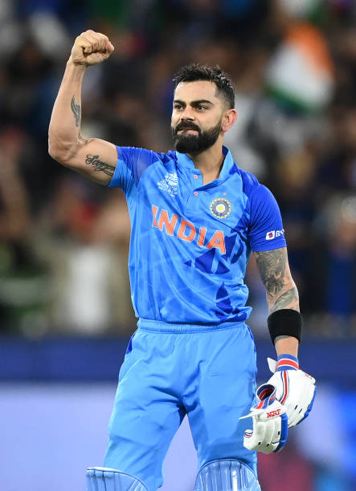

VIRAT KOHLI
the running machine
Virat Kohli, born on November 5, 1988, in Delhi, India, is one of cricket's most celebrated figures. Affectionately known as "Chiku" , Kohli is a right-handed batsman and occasionally bowls right-arm medium pace. He has represented Delhi in domestic cricket and has been a stalwart for Royal Challengers Bangalore (RCB) in the Indian Premier League (IPL). Kohli made his international debut in One Day Internationals (ODIs) on August 18, 2008, against Sri Lanka, followed by his Test debut on June 20, 2011, against the West Indies. He also debuted in T20 Internationals on June 12, 2010, against Zimbabwe. His aggressive batting style and leadership have made him a global cricketing icon
Career Highlights
- Captained India : Virat Kohli served as the captain of the Indian cricket team across all formats. Under his leadership, India achieved significant success, including becoming the number one Test team in the world.
- ODI Runs : Kohli is one of the highest run-scorers in One Day Internationals (ODIs), with over 12,000 runs and 40+ centuries.
- Test Runs : In Test cricket, he has over 7,000 runs, with numerous centuries and double centuries.
- T20I : Kohli is among the top run-scorers in T20 Internationals, known for his consistency and ability to chase down targets.
Achievements
- Spouse : Anushka Sharma (Bollywood actress)
- Children : Vamika Kohli (daughter)
- Philanthropy : Kohli is also known for his philanthropic efforts through the Virat Kohli Foundation, which supports various causes, including education and sports..
Personal Details
- Awards : Awards: Kohli has received numerous awards, including the ICC Cricketer of the Year, Sir Garfield Sobers Trophy, and the prestigious Rajiv Gandhi Khel Ratna award.
- Records : He holds several records, including the fastest century in ODIs by an Indian and the fastest to reach 8,000, 9,000, 10,000, 11,000, and 12,000 runs in ODIs.
- IPL : In the IPL, he has been a stalwart for Royal Challengers Bangalore, consistently being one of the top run-scorers in the tournament.